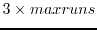

Next: Reading and Writing Blanking Up: Region of Interest and Previous: Regular Regions of Interest
subroutine BoxMask(tno,boxes,maxboxes)
logical function BoxRect(boxes)
subroutine BoxRuns(naxis,nsize,flags,boxes,
* runs,maxruns,nruns,xblx,xtrc,yblc,ytrc)
BoxMask requests that an image mask be ANDed with the region requested by the user. The input to the routine is the image dataset handle, tno, whereas the boxes array is an input/output integer array used to accumulate region of interest information. BoxMask can be called multiple times, each time ANDing in a new image mask. This is an optional routine. Typically it would be called for each of the input images, so that ``blanked'' pixels in the input images would be excluded from the region of interest.
BoxRect returns .true. if the region of interest is rectangular (i.e. whether the region of interest is entirely described by blc and trc.
BoxRuns returns the region selected for a particular plane. The input arguments naxis and nsize are analogous to the same arguments in the xysetpl routine. runs is an integer array of size . On output it indicates which pixels in the plane are to be process. Runs consists of nruns entries of the form:
j,imin,imax
This indicates that pixels (imin,j) to (imax,j) are to be processed.
All entries are non-overlapping.
There may be zero or many entries for a particular value of j. The
table is in increasing order of j and imin. On output, the integers
xblc, xtrc, yblc and ytrc give the bottom left and top right
corners, in x and y, of the smallest subimage which contains the selected
pixels.
The flags argument, an input character
string, indicates some extra options. These are:
Miriad manager